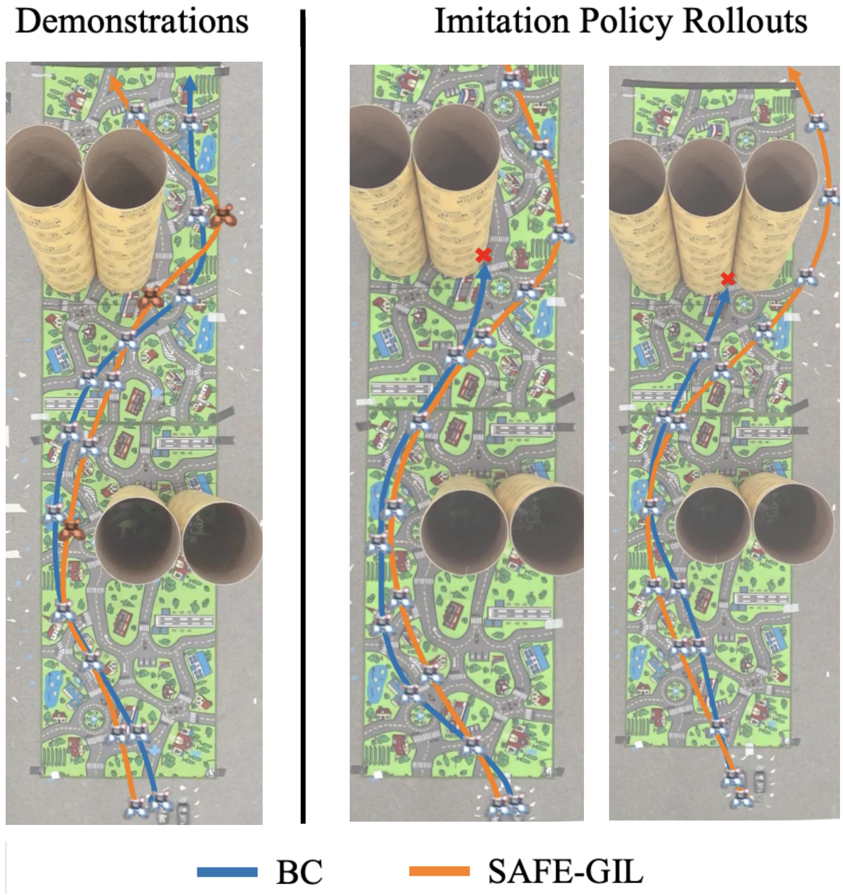
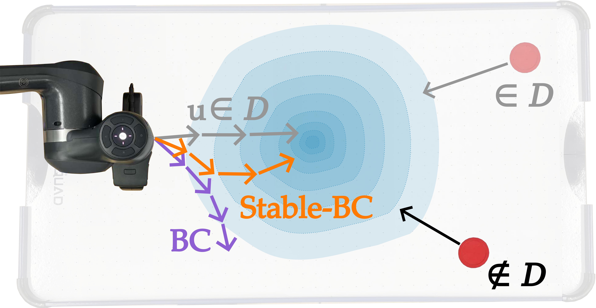

← Back to research themes
Design for Safety
Safe learning, training, evaluation, and data collection
Safe autonomy should not rely only on last-minute correction. A well-designed system should learn from the right data, optimize the right objectives, understand its limitations, and avoid operating near unsafe regimes whenever possible. In this theme, we develop methods for safety-aware training, data collection, verification, and pre-deployment evaluation of learning-enabled autonomous systems.
Representative Projects

Safety Guided Imitation Learning
SAFE-GIL makes imitation learning safer at design time by collecting data in safety-critical states. Reachability-guided disturbance injection exposes the learner to the kinds of errors it may make during deployment, reducing safety failures before the policy is used on a robot.

Stable Behavior Cloning
Stable-BC adds control-theoretic structure to behavior cloning so learned policies move back toward demonstrated behaviors instead of drifting away under covariate shift. The result is a simple training modification with stronger robustness properties.

Offline Policy Evaluation for Manipulation Policies
This work evaluates manipulation policies from offline rollouts with sparse rewards and finite horizons. A discounted liveness formulation yields value estimates that better track task progress and reduce truncation bias before deployment.

Optimal Control and Learning for Visual Navigation
A modular visual navigation policy combines learned high-level perception with model-based planning and control. This design improves generalization to new buildings, transfers from simulation to reality, and uses data more efficiently than purely learned navigation.